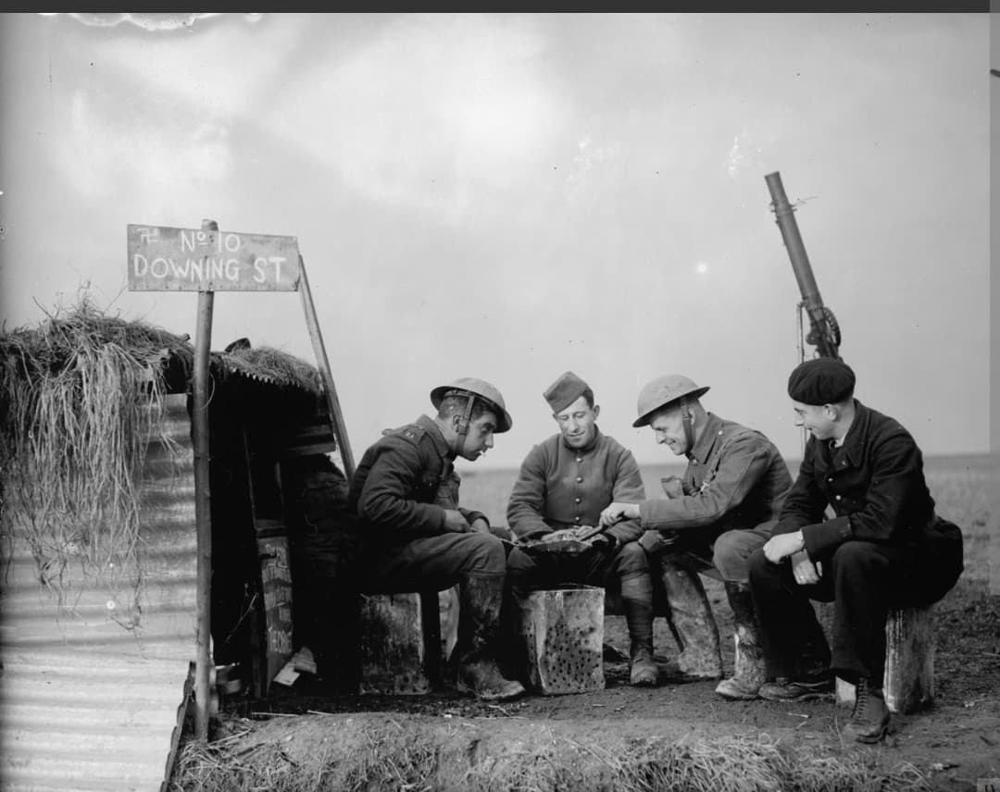
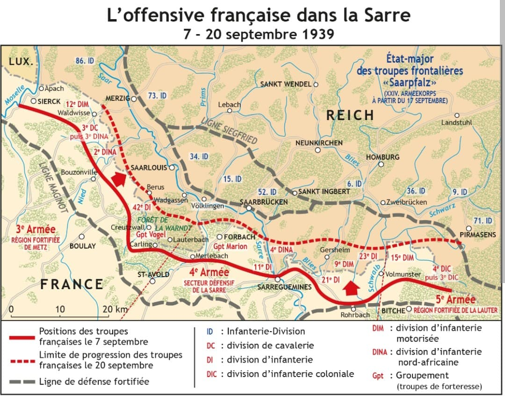
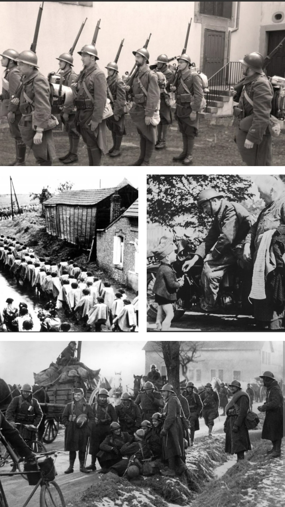
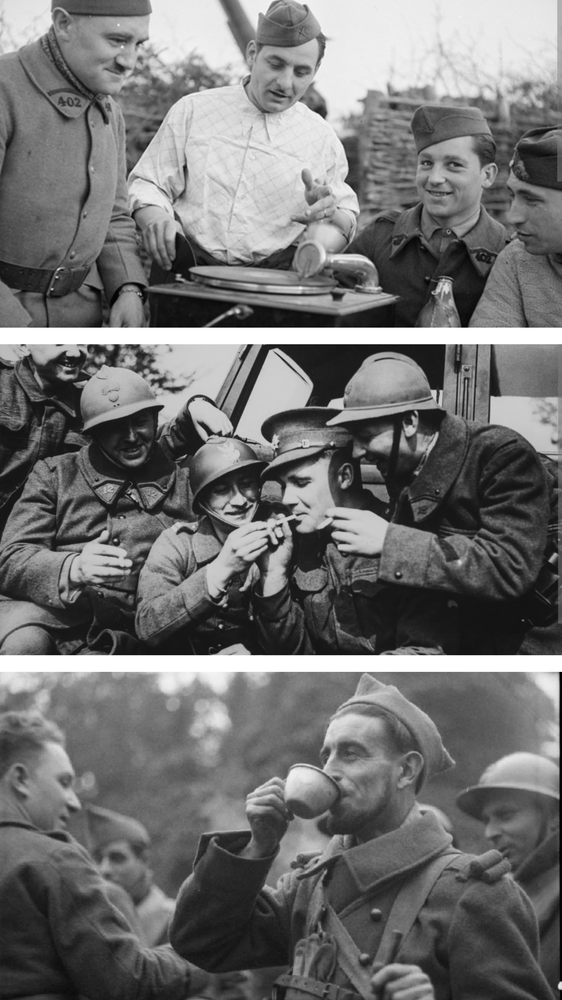
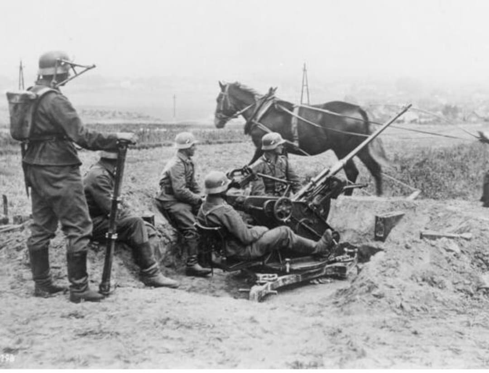

Huit mois d'attente suspendue sur le front : de la déclaration de guerre du 3 septembre 1939 à l'offensive allemande du 10 mai 1940

L'expression « Drôle de guerre » (attribuée à l'écrivain Roland Dorgelès en octobre 1939, et appelée Phoney War par les Britanniques ou Sitzkrieg par les Allemands) désigne la période de huit mois qui s'étend de la déclaration de guerre de la France et du Royaume-Uni à l'Allemagne le 3 septembre 1939 jusqu'au déclenchement de l'offensive allemande à l'Ouest le 10 mai 1940.
Bien que plus de quatre millions de Français soient mobilisés aux frontières du Nord-Est, aucune bataille d'envergure n'éclate sur le front occidental pendant tout cet hiver, laissant place à une observation armée, à l'attente et à une guerre psychologique.
Côté franco-britannique, le haut commandement privilégie une posture strictement défensive derrière la ligne Maginot, misant sur un blocus maritime pour asphyxier l'économie allemande en attendant de monter en puissance industrielle.
La seule incursion terrestre notable a lieu du 7 au 20 septembre 1939 avec l'offensive de la Sarre : les 3e, 4e et 5e armées françaises avancent de quelques kilomètres en territoire allemand face à la ligne Siegfried avant de recevoir l'ordre de se replier prudemment, marquant le début de l'enlisement.

Installés dans des villages réquisitionnés ou le long des ouvrages fortifiés, les soldats français subissent l'hiver rigoureux de 1939-1940 et l'inaction. Pour combattre l'ennui qui pèse sur le moral des troupes, la vie s'organise autour des foyers du soldat, des parties de cartes, de la musique sur gramophone et des moments de camaraderie.


Dès septembre 1939, le Corps expéditionnaire britannique (British Expeditionary Force) débarque en France et prend position le long de la frontière franco-belge. Soldats français et britanniques partagent les cantonnements, renforcent les positions et cultivent l'humour pour dédramatiser l'attente, baptisant par exemple leur abri de campagne « No 10 Downing St ».
De l'autre côté de la frontière, l'armée allemande ne reste pas inactive. Après avoir achevé la campagne de Pologne, la Wehrmacht met à profit ces huit mois de répit pour entraîner sans relâche ses unités au combat interarmes, installer ses batteries d'artillerie et de défense antiaérienne (Flak) et préparer en secret le plan Fall Gelb (la percée foudroyante par les Ardennes).

À l'aube du 10 mai 1940, l'aviation allemande bombarde les aérodromes alliés tandis que les divisions blindées s'engouffrent aux Pays-Bas, en Belgique et au Luxembourg. La « Drôle de guerre » s'achève brutalement, laissant place à la Bataille de France.
Page du Musée HOP WW2 – Section Histoire & Mémoire